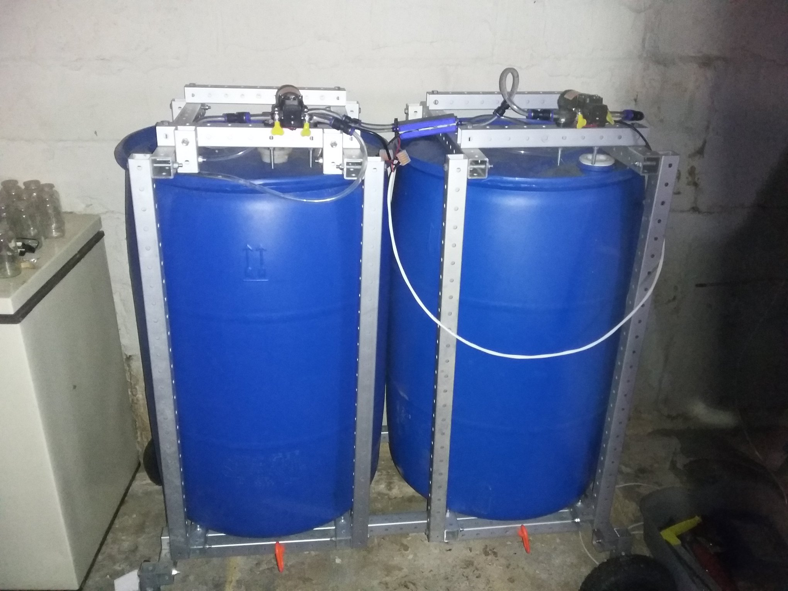

thermal batteries revision 671

rev1
Running on 4x100W 12v panels wired direct, no charge controller. Motors aren't yet wired to a temperature switch to optimize their power draw (consequently they consume 2x72W continuous) but the IR thermometer still measured a three degree differential between the tanks today at 2:00pm. ~ 0.37 Kwh (1320477J / 314399cal / 367Wh / 1252 btu) stored after a few hours of running. Cool. On to rev2.
Parts
{| class="wikitable"
|-
! Quantity !! Part !! Link
|-
| 1 || 500W Heater/cooler module ||
|-
| 2 || [[pump|Pump]] ||
|-
| 2 || [[barrel|Barrel]] ||
|}